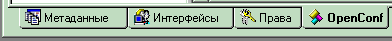
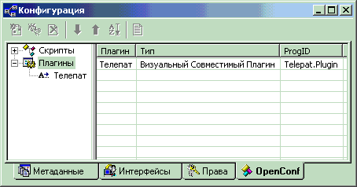
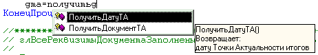
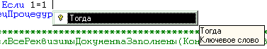
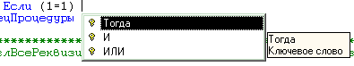

Телепат - это плагин для OpenConf, расширяющий возможности
встроенного в Конфигуратор 1С-Предприятия 7.7 текстового редактора.
Разработчик: Александр Орефков
Для работы используется недокументированный интерфейс взаимодействия с программой
1С-Предприятие путем прямого обращения к функциям, экспортируемых из dll-файлов 1С.
Никаких гарантий работоспособности плагина не предоставляется. Используйте на свой страх и риск.
ПЛАНИРУЕМЫЕ ВОЗМОЖНОСТИ
- Работа с методами и атрибутами объектов (работа после точки)
В дистрибутив Телепата включены следующие файлы:
| |
|
| | telepat.dll | непосредственно сам плагин. Для работы достаточно одного этого файла |
| |
|
| | telepat.chm | данный файл справки |
| |
|
| | history.txt | история изменений от версии к версии |
| |
|
| | telepat.vbs | пример скрипта для OpenConf, написанный на VBScript и демонстрирующий возможности програмной работы с Телепатом |
| |
|
| | 1cv7srct.st | пример динамических шаблонов, обрабатываемых в примере telepat.vbs |
| |
|
УСТАНОВКА
Для работы Телепата необходим OpenConf версии не ниже 1.0.1.2
Если у вас уже установлен OpenConf нужной версии, то вы можете
пропустить раздел по его установке.
В противном случае сначала вам необходимо установить OpenConf.
Для этого проделайте следующее:
- Перейдите по адресу http://openconf.itland.ru/beta,
и скачайте там текущую версию OpenConf'а.
- Выясните, где у вас размещены исполняемые файлы 1С-Предприятия.
(Обычно C:\Program Files\1CV77\BIN)
В каталоге исполняемых файлов 1С ("BIN") создайте каталог "CONFIG".
- Файл "config.dll", расположенный в каталоге "BIN", переместите в
созданный каталог "BIN\CONFIG".
- Файлы "config.dll" и "config.tlb" из скачанного архива распакуйте
в каталог "BIN".
- В созданном каталоге "BIN\CONFIG" создайте каталог "SCRIPTS".
После этого у вас должна получиться такая структура файлов и каталогов:
\BIN
config.dll (от OpenConf)
config.tlb
\CONFIG
config.dll (от 1С)
\SCRIPTS
Далее запустите Конфигуратор на
тестовой базе.
Откройте конфигурацию. Если все было проделано правильно, в окне
конфигурации у вас появится вкладка "OpenConf".

OpenConf установлен.
Теперь собственно установка Телепата.
Просто разместите файл telepat.dll в каталоге BIN\CONFIG.
После этого запустите Конфигуратор, и откройте конфигурацию.
Если все сделано правильно, то на вкладке "OpenConf" можно увидеть следующую картинку:

Если вы намерены пользоваться програмными возможностями Телепата, то
можете разместить прилагаемый пример скрипта telepat.vbs в каталоге BIN\CONFIG\SCRIPTS.
В этом случае вы также можете посмотреть работу примера динамически обрабатываемых
шаблонов. Для этого в конфигураторе выберите пункт меню "Сервис-Параметры", и на
вкладке "Синтакс-Помощник" укажите расположение файла 1cv7srct.st из дистрибутива Телепата.
ВАЖНО: на машинах с W2K, XP и тп первый запуск OpenConf'а и Телепата должен производиться пользователем
с правами локального администратора, либо имеющим права на запись в HKCR ветку
реестра
ВОЗМОЖНОСТИ ТЕЛЕПАТА
Автозавершение набираемых идентификаторов (CodeComplete)

Список завершений появляется либо автоматически, когда длина набранного слова
достигнет значения, установленного в настройках Телепата, либо принудительно
нажатием сочетания кнопок Ctrl+Пробел.
Также можно активировать список с помощью пункта меню "Завершить слово" в меню "Действия"
или контекстного меню, а также соответствующей кнопки на панели инструментов "Телепат".
Список содержит все слова, начинающиеся с уже введенных символов и по мере
набора сокращается.
Слова в списке сортируются по алфавиту, кроме тех слов, которые до этого уже вставлялись из списка.
Такие слова размещаются в начале.
В список включены также ключевые слова языка 1С.
Для уменьшения количества возможных завершений при активации списка
производится анализ текста модуля перед местом вставки и определяется набор, допустимый
в данном месте.
Все методы разделены на три группы:
- процедуры - недопустимы в выражениях и могут появлятся только в начале оператора.
- функции - могут появлятся как в начале оператора, так и в выражениях.
- функции, допустимые только в выражениях - например, СокрЛП, НачМесяца и тп.
Хотя синтаксически допустимо вызывать эти функции как процедуры, но практического
смысла это не имеет, и поэтому такие функции появляются только в выражениях.
Аналогичный анализ производится для ключевых слов.
Ключевое слово появляется в списке,
только если оно допустимо в месте вставки.
Например, вы набрали
Если 1=1
и нажали Ctrl+Пробел, в списке завершений появится только Тогда:

А если набрано
Если (1=1)
в списке завершений появится И, ИЛИ, Тогда:

Помимо ключевых слов в список включено 7 предопределенных языковых констркций:
- Функция_КонецФункции
- Процедура_КонецПроцедуры
- Если_КонецЕсли
- ИначеЕсли_Тогда
- Пока_КонецЦикла
- Для_КонецЦикла
- Попытка_КонецПопытки
которые вставляет сразу блок из нескольких ключевых слов.
При вставке ключевых слов и предопределенных блоков в месте
вставки производится автоформатирование текста (то, которое по Ctrl+Shift+F)
При включенной настройке "Добавлять шаблоны в список" в списке завершений
появляются слова, автоматически заменяемые с помощью механизма шаблонов.
При этом слово попадает в список, если оно подпадает под определение идентификатора
(начинается с буквы или подчеркивания и содержит только буквы, цифры и подчеркивания).
Кроме того, список завершений появляется при наборе строковых выражений.
В этом случае список позволяет быстро выбрать названия и реквизиты справочников,
документов, журналов, регистров, отчетов, обработок и планов счетов.
Для более удобной ориентации в списке, каждое слово в нем сопровождается иконкой.
| Метод в текущем модуле |
| | Экспортируемый метод в текущем модуле |
| Переменная текущего модуля |
| | Экспортируемая переменная текущего модуля |
| Метод глобального модуля |
| | Экспортируемый метод глобального модуля |
| Переменная глобального модуля |
| | Экспортируемая переменная глобального модуля |
| | Реквизит формы |
| | Стандартный метод 1С |
| | Стандартный объект 1С |
| | Ключевое слово |
| | Локальная переменная |
 | Атрибут метаданных текущего модуля |
| | Различные строковые идентификаторы |
| Предопределенные блоки или слова замены шаблонов |
Работа со списком.
При активном списке завершений нажатия стрелок вверх/вниз пермещают выбранное слово.
Нажатие TAB или ENTER вставляют выбранное слово в текстовый редактор.
Нажатие любого символа, недопустимого в идентификаторах, либо ввод символа, при котором
для набранного слова нет возможных завершений, либо ESC, приводит к скрытию списка.
В этом случае автоактивация списка отключается до тех пор, пока снова не будет
введен символ, недопустимый в идентификаторах.
Ускоренный анализ текста модуля
При автоактивации списка завершений для более быстрой работы применяется ускоренный анализ
текста модуля. При этом текст анализируется не с самого начала, а с ближайшего слова "Процедура", "Функция",
"КонецПроцедуры", "КонецФункции". Предполагается, что структура модуля до этого места не изменилась с
момента предыдущего анализа (в большинстве случаев это так).
Но так как технически очень сложно отследить все действия с текстом модуля, могущие изменить его структуру,
возможно появление в автоматически появляющемся списке "устаревших" данных или наоборот, отсутствие "свежих".
В этом случае достаточно "принудительно" вызвать список завершений.
При таком вызове производится полный повторный анализ текста модуля.
Быстрый переход к методам и переменным (CodeJump)